# Clear the environment for a fresh start
rm(list = ls())
graphics.off()
# Smart loading: Install if missing, then load rpart
if(!require('rpart')) {
install.packages('rpart')
library('rpart')
}
# Smart loading: Install if missing, then load rpart.plot
if(!require('rpart.plot')) {
install.packages('rpart.plot')
library('rpart.plot')
}
# Smart loading: Install if missing, then load tidyverse
if(!require('tidyverse')) {
install.packages('tidyverse')
library('tidyverse')
}
# Load titanic dataset
if(!require('titanic')) {
install.packages('titanic')
library('titanic')
}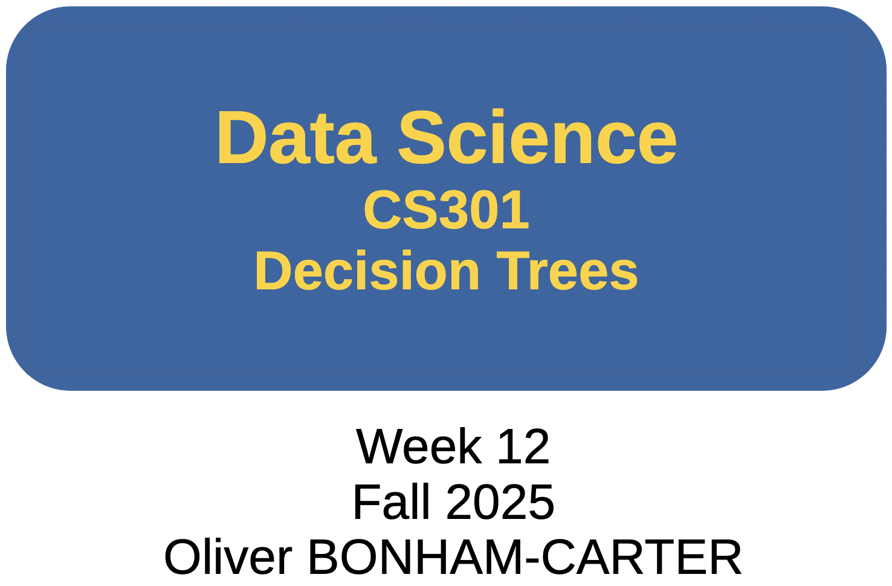
🎯 Learning Objectives
By the end of this presentation, you will:
- 🌳 Understand what decision trees are and how they work
- 🎯 Learn when to use decision trees for classification & prediction
- 🔧 Build your own decision trees in R using
rpart - 📊 Visualize and interpret decision tree results
- 🚀 Apply decision trees to real-world datasets (Titanic, medical data)
- 🧠 Make data-driven conclusions with confidence
What You’ll Need 📦
Make sure you have R and RStudio installed. We’ll be using the rpart, rpart.plot, and tidyverse packages throughout this tutorial!
🌟 Before We Start: Required R Packages
Copy and run this code in your R console to install everything you need:
# Essential packages for Decision Trees
install.packages(c(
"rpart", # Recursive Partitioning (decision trees)
"rpart.plot", # Beautiful tree visualizations
"tidyverse", # Data manipulation & visualization
"titanic" # Sample Titanic dataset
))
# Load the libraries
library(rpart)
library(rpart.plot)
library(tidyverse)
library(titanic)Tip
Pro Tip! 💡 The rpart package is your gateway to building decision trees in R!
🛠️ Smart Library Loading (Automated Setup)
This code automatically installs packages if they’re missing, then loads them:
What’s Happening? This approach means your code works on any R installation - perfect for sharing! 🎓
🌳 What is a Decision Tree?
Think of it like a game of “20 Questions”! 🎮
- Start at the root (top)
- Ask a yes/no question at each node
- Follow the branches based on answers
- Reach a leaf (conclusion) at the bottom
Real-life Example: “Should I bring an umbrella?” 🌂
- Is it cloudy? → Yes → Will it rain? → Yes → Bring umbrella!
Decision Tree Structure:
[Is it cloudy?]
/ \
Yes No
/ \
[Will rain?] [Don't bring]
/ \
Yes No
/ \
[Bring!] [Maybe bring]Key Terms:
- 🌱 Root Node: Starting point
- 🌿 Internal Nodes: Decision points
- 🍃 Leaf Nodes: Final outcomes
- 🌿 Branches: Connections between nodes
🎯 Why Use Decision Trees?
- ✅ Easy to understand - Visual and intuitive!
- ✅ No data prep needed - Works with raw data
- ✅ Handles mixed data - Numeric & categorical
- ✅ Non-parametric - No assumptions about data distribution
- ✅ Feature importance - Shows which variables matter most
- ✅ Quick to train - Fast even on large datasets
- ❌ Overfitting risk - Can memorize training data
- ❌ Unstable - Small data changes = different tree
- ❌ Biased to dominant classes - Imbalanced data issues
- ❌ Not always optimal - Greedy algorithm
- ❌ Struggles with linear relationships
Perfect for:
- 🏥 Medical diagnosis (disease present/absent?)
- 💳 Credit approval (approve/reject loan?)
- 📧 Spam detection (spam/not spam?)
- 🎓 Student performance (pass/fail?)
- ⚽ Sports outcomes (win/lose/draw?)
- 🐾 Species classification (cat/dog/rabbit?)
🔬 How Decision Trees Work: The Algorithm
Step-by-Step Process:
- Start with all data at the root node 🌱
- Find the best split - Which feature separates classes best?
- Measure “purity” using Gini Index or Information Gain
- Split the data into subgroups based on that feature
- Repeat for each subgroup (recursively!)
- Stop when:
- All samples in a node are the same class ✅
- Maximum depth reached 📏
- Too few samples to split 🔢
Key Concept: Splitting Criteria 📊
Gini Index: Measures impurity (0 = pure, 0.5 = mixed)
Information Gain: Reduction in entropy (uncertainty)
The algorithm picks the split that gives the best improvement!
🎲 Simple Example: Animal Classification
Goal: Classify animals as Cat, Dog, Rabbit, or Bird
# Create sample animal dataset
set.seed(42)
animals <- data.frame(
size = c("small", "medium", "large", "small", "medium", "small",
"large", "small", "medium", "large", "small", "medium"),
color = c("brown", "black", "white", "gray", "brown", "white",
"black", "gray", "brown", "white", "orange", "black"),
type = c("cat", "dog", "dog", "rabbit", "dog", "bird",
"dog", "rabbit", "cat", "dog", "cat", "dog")
)
head(animals, 6) # Show fewer rows for cleaner display size color type
1 small brown cat
2 medium black dog
3 large white dog
4 small gray rabbit
5 medium brown dog
6 small white bird🌳 Building Our First Decision Tree
# Build decision tree
animal_model <- rpart(type ~ size + color, data = animals, method = "class")
# Display model summary
print(animal_model)n= 12
node), split, n, loss, yval, (yprob)
* denotes terminal node
1) root 12 6 dog (0.08333333 0.25000000 0.50000000 0.16666667) *Reading the Output 📖
- node): Node number in the tree
- split: The condition used to split this node
- n: Number of observations at this node
- loss: Number of misclassifications
- yval: Predicted class for this node
📊 Understanding the Model Output
Let’s decode what print(animal_model) shows us:
The output displays a text representation of the decision tree structure:
n=20 (total number of observations)
node), split, n, loss, yval, (yprob)
* denotes terminal (leaf) nodeKey Components:
- Node number: Each decision point gets a unique ID
- Split condition: The rule used (e.g., “size=large,medium”)
- n: How many animals reach this node
- loss: How many would be misclassified using this node’s prediction
- yval: The predicted class (cat, dog, bird, rabbit)
- yprob: Probability distribution across all classes
📖 Reading a Node Example
Example from the output:
1) root 20 10 dog (0.25 0.50 0.15 0.10)
2) size=large,medium 12 2 dog (0.17 0.83 0.00 0.00) *Breaking it down:
Node 1 (root):
20observations total10misclassifications if we guess “dog” for everyone- Predicts
dogas most common class - Probabilities: 25% cat, 50% dog, 15% bird, 10% rabbit
Node 2:
- Animals with
size=large,medium 12observations reached this node- Only
2misclassifications (pretty good!) - Predicts
dogwith 83% probability *means this is a terminal node (no further splits)
🌳 Animal Classification Tree Visualization
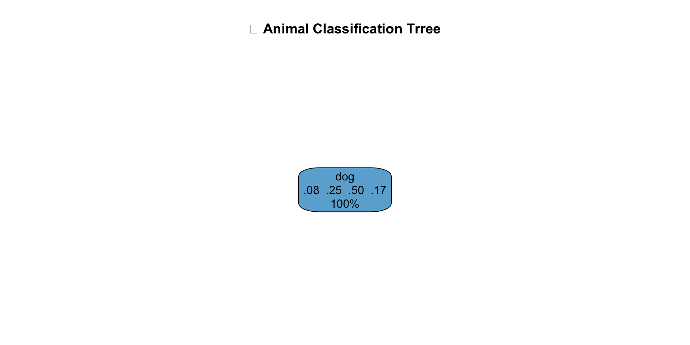
Note: the probabilities refer to the number of dogs in the data who happen to be brown, black, gray and white.
🌳 Understanding the Animal Tree Output
What do we see? 🤔
- The tree asks about size first (most important!)
- Then uses color to refine predictions
- Numbers show: class/probability/percentage of data
Reading the model output:
- Node splits based on feature values
- Terminal nodes show final classifications
- Each node displays the predicted class and split criteria
🔍 Interpreting the Tree
Reading the Animal Tree: 📖
- Root Node: Starts with all animals
- First Split: “Is size = large?”
- Yes → Likely a dog (large animals)
- No → Continue asking questions
- Second Split: “Is size = small?”
- Yes → Check color next
- No (medium) → Likely a dog
- Leaf Nodes: Final predictions
- Small + brown/gray → cat
- Small + white/orange → bird or rabbit
Tip
Pro Tip! 💡 Follow the path from root to leaf to see the decision rules!
🚢 Real-World Example: Titanic Survival
The Challenge: Predict who survived the Titanic disaster
Create Dataframe
Dataset Preparation 📦
We’ve selected key variables and removed missing values for simplicity. In production, you’d want to handle missing data more carefully!
Data Preview
Rows: 714
Columns: 7
$ Survived <int> 0, 1, 1, 1, 0, 0, 0, 1, 1, 1, 1, 0, 0, 0, 1, 0, 0, 0, 1, 1, 1…
$ Pclass <int> 3, 1, 3, 1, 3, 1, 3, 3, 2, 3, 1, 3, 3, 3, 2, 3, 3, 2, 2, 3, 1…
$ Sex <chr> "male", "female", "female", "female", "male", "male", "male",…
$ Age <dbl> 22, 38, 26, 35, 35, 54, 2, 27, 14, 4, 58, 20, 39, 14, 55, 2, …
$ Fare <dbl> 7.2500, 71.2833, 7.9250, 53.1000, 8.0500, 51.8625, 21.0750, 1…
$ SibSp <int> 1, 1, 0, 1, 0, 0, 3, 0, 1, 1, 0, 0, 1, 0, 0, 4, 1, 0, 0, 0, 0…
$ Parch <int> 0, 0, 0, 0, 0, 0, 1, 2, 0, 1, 0, 0, 5, 0, 0, 1, 0, 0, 0, 0, 0…
Total observations: 714 Survival rate: 40.6 %📊 Titanic Dataset Overview
Dataset Information: 🛳️
- Survived: 0 = No, 1 = Yes (our target!)
- Pclass: Passenger class (1st, 2nd, 3rd)
- Sex: Male or Female
- Age: Age in years
- Fare: Ticket price
- SibSp: Number of siblings/spouses aboard
- Parch: Number of parents/children aboard
Why This Dataset? 🌊
The Titanic dataset is perfect for learning classification because it has a mix of categorical (Sex, Pclass) and continuous variables (Age, Fare), and the target is clearly binary. Plus, the historical context makes the results meaningful!
🌳 Building the Titanic Model
Model Configuration ⚙️
We’re using cp = 0.02 to prevent overfitting. This creates a balanced tree that’s complex enough to be useful but simple enough to generalize well.
🌳 Titanic Model Structure
n= 714
node), split, n, loss, yval, (yprob)
* denotes terminal node
1) root 714 290 0 (0.59383754 0.40616246)
2) Sex=male 453 93 0 (0.79470199 0.20529801)
4) Age>=6.5 429 77 0 (0.82051282 0.17948718) *
5) Age< 6.5 24 8 1 (0.33333333 0.66666667)
10) SibSp>=2.5 9 1 0 (0.88888889 0.11111111) *
11) SibSp< 2.5 15 0 1 (0.00000000 1.00000000) *
3) Sex=female 261 64 1 (0.24521073 0.75478927)
6) Pclass>=2.5 102 47 0 (0.53921569 0.46078431)
12) Fare>=20.8 23 3 0 (0.86956522 0.13043478) *
13) Fare< 20.8 79 35 1 (0.44303797 0.55696203) *
7) Pclass< 2.5 159 9 1 (0.05660377 0.94339623) *🌳 Titanic Model Visualization
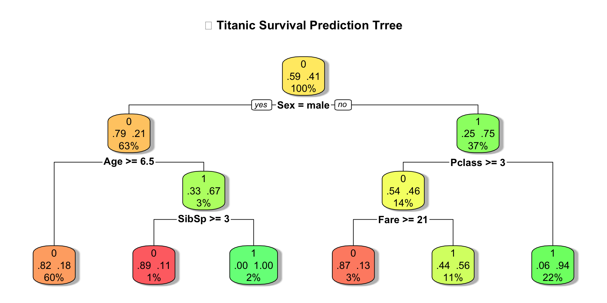
🎯 Key Insights from Titanic Tree
What the tree reveals: 🔍
- 🚺 Sex is the most important factor!
- Males had much lower survival rates
- Females had higher survival rates
- 🎫 Passenger Class matters:
- 1st class passengers → better survival
- 3rd class passengers → lower survival
- 👶 Age plays a role:
- Children had better chances
- Older males had lowest survival
🎯 Historical Context
“Women and children first!” policy clearly visible in data! 🛟
The decision tree reveals historical emergency protocols:
- Gender was the primary decision factor
- Social class influenced survival chances
- Age was considered after gender and class
- The tree structure mirrors actual evacuation priorities
Machine Learning Meets History 📜
This is a powerful example of how ML can uncover patterns in historical data. The tree didn’t know about the “women and children first” policy—it discovered it from the data alone!
📊 Model Performance Metrics (I)
# Get predictions
predictions <- predict(titanic_model, titanic_data, type = "class")
# Create confusion matrix
confusion_matrix <- table(Actual = titanic_data$Survived,
Predicted = predictions)
print(confusion_matrix) Predicted
Actual 0 1
0 380 44
1 81 209# Calculate accuracy
accuracy <- sum(diag(confusion_matrix)) / sum(confusion_matrix)
cat("\n🎯 Model Accuracy:", round(accuracy * 100, 2), "%\n")
🎯 Model Accuracy: 82.49 %📊 Model Performance Metrics (II)
📊 Understanding Model Performance
What does this mean? 🤔
- Our tree correctly predicts survival ~80% of the time!
- Confusion Matrix shows:
- True Positives: Correctly predicted survivors
- True Negatives: Correctly predicted non-survivors
- False Positives: Predicted survival but didn’t survive
- False Negatives: Predicted death but survived
- Precision: Of those we predicted survived, how many actually did?
- Recall: Of those who survived, how many did we identify?
Improving Performance 🚀
Not happy with 80%? Try adjusting the cp parameter, adding feature engineering, or using ensemble methods like Random Forests!
🔧 Tuning Decision Trees: Control Parameters
Important rpart.control() parameters:
control = rpart.control(
cp = 0.01, # Complexity parameter
minsplit = 20, # Min observations to split
minbucket = 7, # Min observations in leaf
maxdepth = 10 # Maximum tree depth
)Parameter Effects:
- Lower
cp→ more complex tree - Higher
minsplit→ simpler tree - Higher
minbucket→ fewer, larger leaves
Balance Complexity! ⚖️
Too simple = underfitting (misses patterns). Too complex = overfitting (memorizes noise). Finding the sweet spot is key!
🔧 Comparing Tree Complexities
# Build trees with different settings
tree_default <- rpart(Survived ~ Pclass + Sex + Age,
data = titanic_data, method = "class")
tree_complex <- rpart(Survived ~ Pclass + Sex + Age,
data = titanic_data, method = "class",
control = rpart.control(cp = 0.001))
tree_simple <- rpart(Survived ~ Pclass + Sex + Age,
data = titanic_data, method = "class",
control = rpart.control(cp = 0.05))Compare & Learn 📊
We’ll visualize all three trees on the next slides. Notice how the complexity parameter (cp) dramatically changes the tree structure!
🔧 Default Tree Visualization
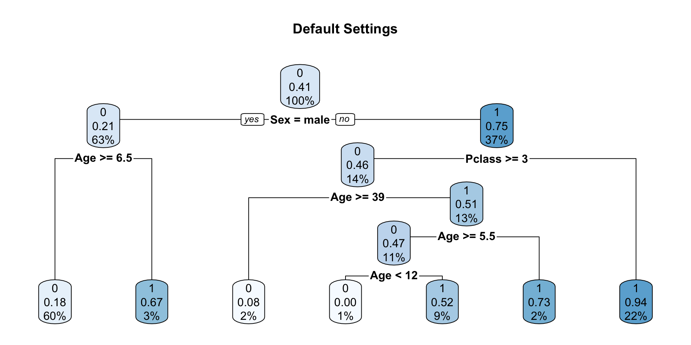
🔧 Complex Tree Visualization
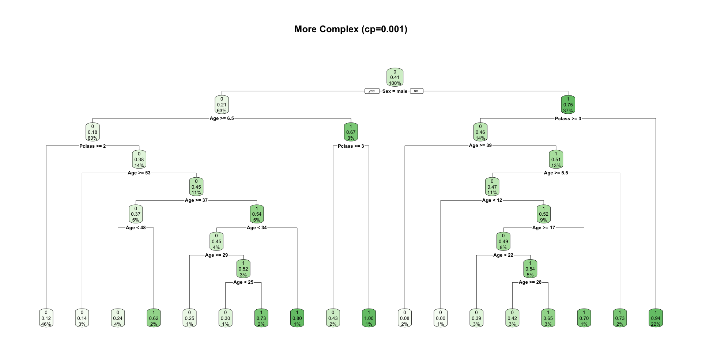
🔧 Simple Tree Visualization
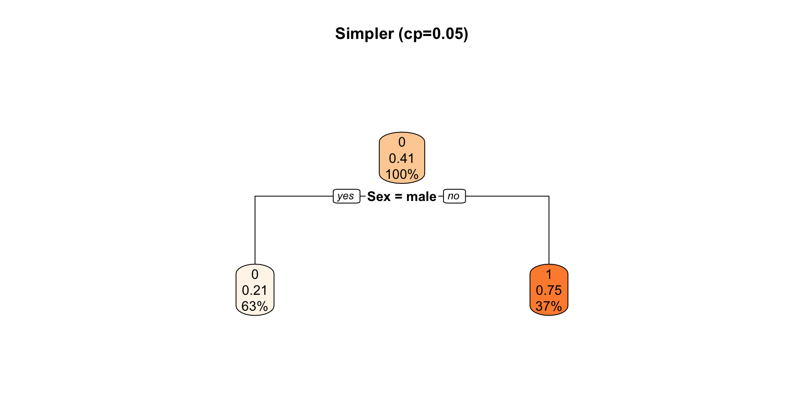
GO Play!

Important
Checkout App: titanic_shinyApp.R
🏥 Medical Example: Kyphosis Dataset
Kyphosis: Spinal deformation after corrective surgery
Kyphosis Age Number Start
1 absent 71 3 5
2 absent 158 3 14
3 present 128 4 5
4 absent 2 5 1
5 absent 1 4 15
6 absent 1 2 16Variables Explained: 📋
- Kyphosis:
absentorpresentafter surgery - Age: Child’s age in months
- Number: Number of vertebrae involved
- Start: Number of first vertebra operated on
Real-World Impact 🏥
This demonstrates how decision trees can assist medical professionals in predicting surgical outcomes, helping them make informed decisions about treatment plans!
🌳 Building Kyphosis Model
🌳 Kyphosis Model Structure
n= 81
node), split, n, loss, yval, (yprob)
* denotes terminal node
1) root 81 17 absent (0.79012346 0.20987654)
2) Start>=8.5 62 6 absent (0.90322581 0.09677419)
4) Start>=14.5 29 0 absent (1.00000000 0.00000000) *
5) Start< 14.5 33 6 absent (0.81818182 0.18181818)
10) Age< 55 12 0 absent (1.00000000 0.00000000) *
11) Age>=55 21 6 absent (0.71428571 0.28571429)
22) Age>=111 14 2 absent (0.85714286 0.14285714) *
23) Age< 111 7 3 present (0.42857143 0.57142857) *
3) Start< 8.5 19 8 present (0.42105263 0.57894737) *🌳 Kyphosis Prediction Tree Visualization
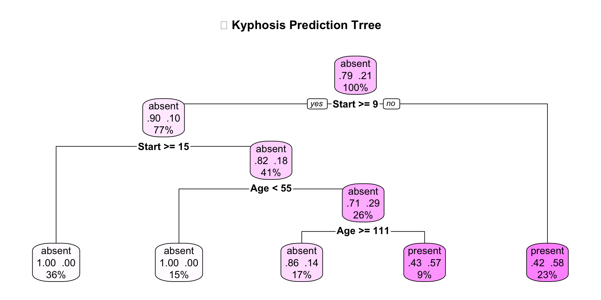
🔍 Medical Insights from Tree
Clinical Decision Rules: 🏥
Start position is crucial:
- If surgery starts at vertebra ≥ 8.5 → Lower risk
- If surgery starts < 8.5 → Check other factors
Age matters for high-start surgeries:
- Young children (< 55 months) with low start → Higher risk
- Older children → Lower risk
Number of vertebrae involved:
- More vertebrae involved → Different risk profile
Clinical Value: Doctors can use this to predict outcomes! 🩺
Interpretability is Key 🔑
Unlike “black box” models, decision trees show why a prediction was made. This is crucial in healthcare where doctors need to explain decisions!
📈 Variable Importance
Which features matter most?
# Get variable importance for Titanic model
importance <- titanic_model$variable.importance
importance_df <- data.frame(
Variable = names(importance),
Importance = importance
) %>% arrange(desc(Importance))
print(importance_df) Variable Importance
Sex Sex 99.99817
Pclass Pclass 32.89624
Fare Fare 31.69365
Age Age 17.32819
Parch Parch 14.46204
SibSp SibSp 13.69736Understanding Importance Scores 📈
These scores measure how much each variable improves the tree’s predictions. Higher scores = more important for making accurate classifications!
📈 Variable Importance Plot
# Visualize
ggplot(importance_df, aes(x = reorder(Variable, Importance), y = Importance)) +
geom_col(fill = "steelblue", alpha = 0.8) +
coord_flip() +
labs(title = "🎯 Feature Importance in Titanic Model",
x = "Variable", y = "Importance Score") +
theme_minimal() +
theme(plot.title = element_text(face = "bold", size = 14))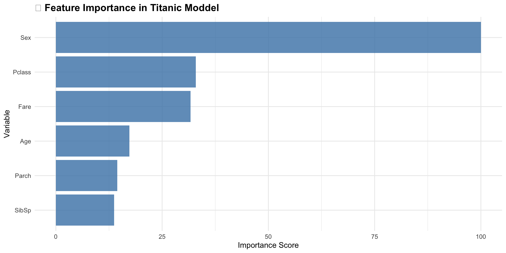
Sex dominates! Gender was the most important predictor. 🚺🚹
🎨 Advanced Visualization Options
Making trees even more beautiful:
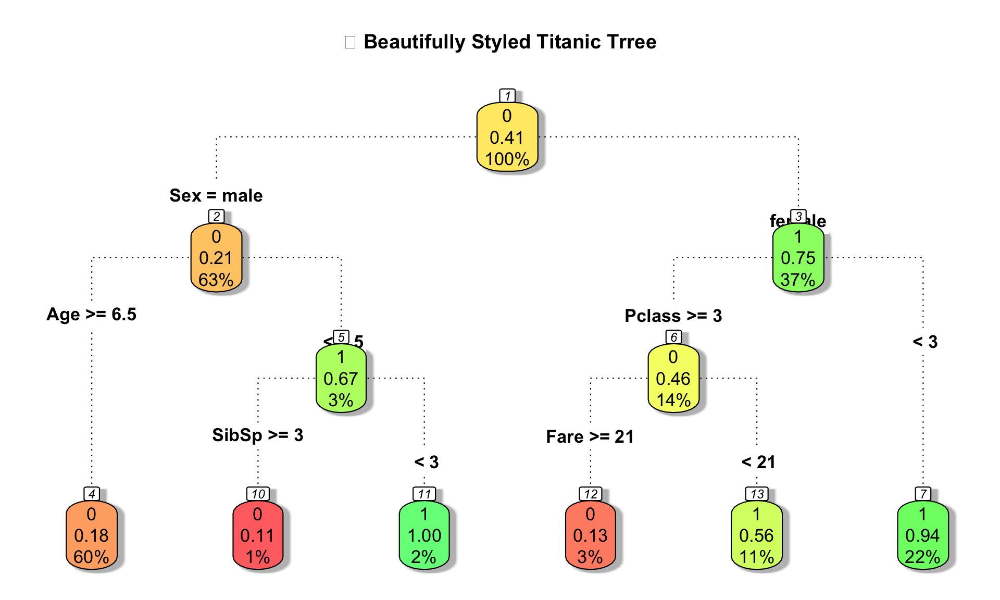
🔄 Comparing Multiple Models
Let’s test different configurations:
🔄 Model 1: Default Settings
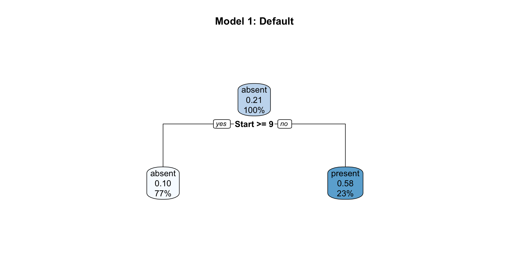
🔄 Model 2: Prior Probabilities
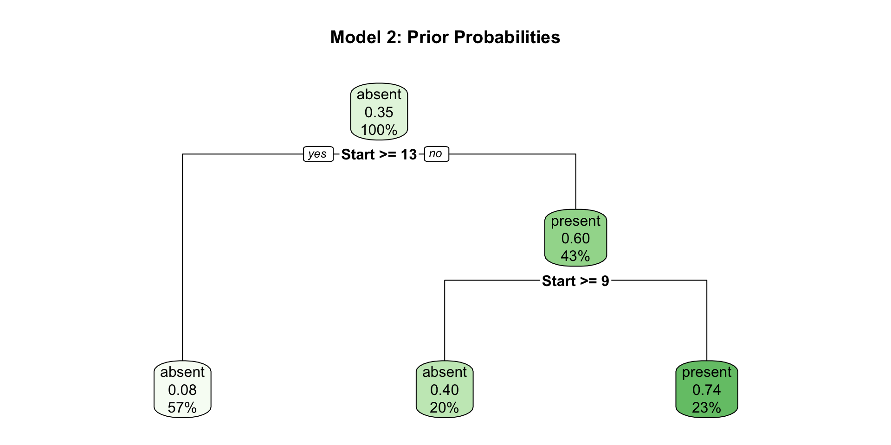
🔄 Model 3: Higher CP
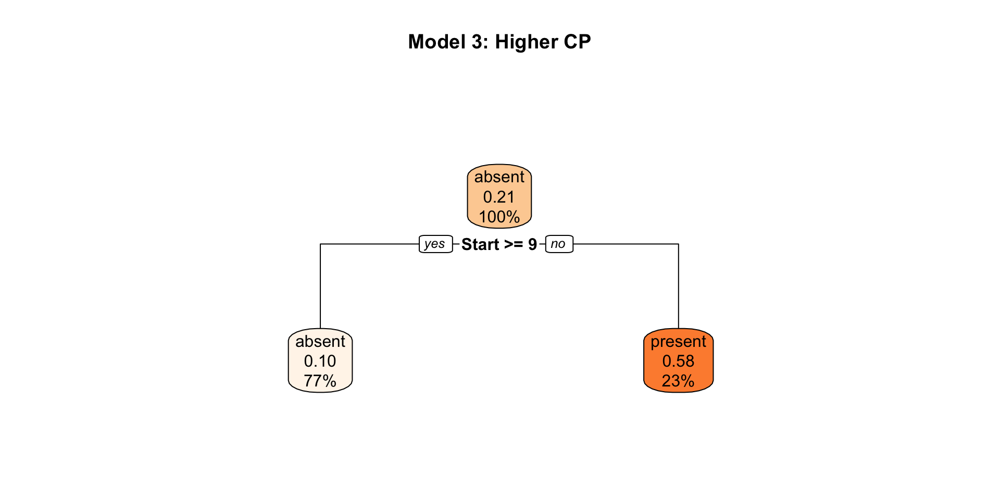
🎯 Making Predictions with Your Tree
Using the model on new data:
# Create new patient data
new_patients <- data.frame(
Age = c(50, 120, 80),
Number = c(3, 5, 4),
Start = c(5, 12, 9)
)
# Make predictions
predictions <- predict(kyphosis_model, new_patients, type = "class")
probabilities <- predict(kyphosis_model, new_patients, type = "prob")
# Display results
results <- cbind(new_patients,
Prediction = predictions,
Prob_Absent = round(probabilities[, 1], 3),
Prob_Present = round(probabilities[, 2], 3))
print(results) Age Number Start Prediction Prob_Absent Prob_Present
1 50 3 5 present 0.421 0.579
2 120 5 12 absent 0.857 0.143
3 80 4 9 present 0.429 0.571🎯 Interpreting Predictions
Understanding the results: 📊
- Patient 1: High risk (present)
- Young age, low start position
- Patient 2: Low risk (absent)
- Older age, high start position
- Patient 3: Low risk (absent)
- Moderate factors
The model provides both class predictions and probabilities for each outcome.
Probabilistic Predictions 🎲
The probabilities show confidence levels! A 90% probability is much more certain than a 51% probability, even though both might have the same predicted class.
🧪 Interactive Demo: Build Your Own Tree!
Let’s create a custom dataset and tree:
# Create your own classification problem
set.seed(123)
custom_data <- data.frame(
study_hours = sample(1:10, 100, replace = TRUE),
attendance = sample(60:100, 100, replace = TRUE),
assignments = sample(0:10, 100, replace = TRUE),
grade = sample(c("Pass", "Fail"), 100, replace = TRUE,
prob = c(0.7, 0.3))
)
# Build tree
student_model <- rpart(grade ~ study_hours + attendance + assignments,
data = custom_data, method = "class")🧪 Student Performance Tree
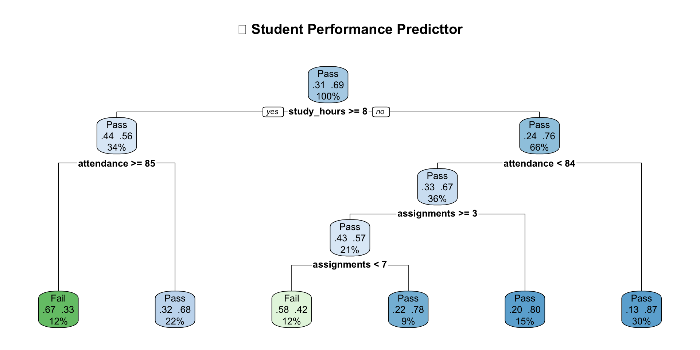
Try it yourself! 💡 Modify the data and see how the tree changes!
📊 Pruning: Preventing Overfitting
Trees can get too complex - let’s prune them! ✂️
Why Prune? ✂️
Complex trees overfit! They memorize training data instead of learning patterns. Pruning simplifies the tree for better predictions on new data.
📊 Complexity Parameter Table
Regression tree:
rpart(formula = Survived ~ ., data = titanic_data, control = rpart.control(cp = 0.001))
Variables actually used in tree construction:
[1] Age Fare Parch Pclass Sex SibSp
Root node error: 172.21/714 = 0.24119
n= 714
CP nsplit rel error xerror xstd
1 0.2903330 0 1.00000 1.00381 0.014390
2 0.0840402 1 0.70967 0.71630 0.036251
3 0.0313244 2 0.62563 0.63249 0.034684
4 0.0312081 3 0.59430 0.62233 0.036795
5 0.0258079 4 0.56309 0.60106 0.035731
6 0.0188184 5 0.53729 0.57575 0.035023
7 0.0100592 6 0.51847 0.56835 0.035852
8 0.0091852 7 0.50841 0.59063 0.037991
9 0.0050748 8 0.49922 0.58935 0.038489
10 0.0045859 9 0.49415 0.60431 0.040519
11 0.0036451 12 0.48039 0.60735 0.040685
12 0.0036031 14 0.47310 0.61232 0.041128
13 0.0033473 15 0.46950 0.60815 0.040947
14 0.0031767 16 0.46615 0.61290 0.041194
15 0.0031714 19 0.45662 0.61534 0.041297
16 0.0019214 21 0.45028 0.63569 0.042087
17 0.0018208 22 0.44836 0.64989 0.042658
18 0.0016741 25 0.44289 0.65177 0.042604
19 0.0014932 29 0.43620 0.65776 0.042596
20 0.0014089 33 0.43022 0.65816 0.042659
21 0.0012815 34 0.42881 0.65936 0.042737
22 0.0011936 36 0.42624 0.65924 0.042578
23 0.0011614 37 0.42505 0.65952 0.042608
24 0.0011086 38 0.42389 0.66066 0.042660
25 0.0010000 39 0.42278 0.66066 0.042660📊 Understanding CP Table
Choosing the right CP:
- Look for the CP with lowest
xerror(cross-validation error) - Or use the “1-SE rule” for simpler trees
nsplit: Number of splits in the treerel error: Relative error on training dataxerror: Cross-validated errorxstd: Standard deviation of xerror
Cross-Validation Matters! 🔄
The xerror is more reliable than training error because it tests on data the tree hasn’t seen. Always trust xerror over rel error!
✂️ Applying Pruning
✂️ Before Pruning
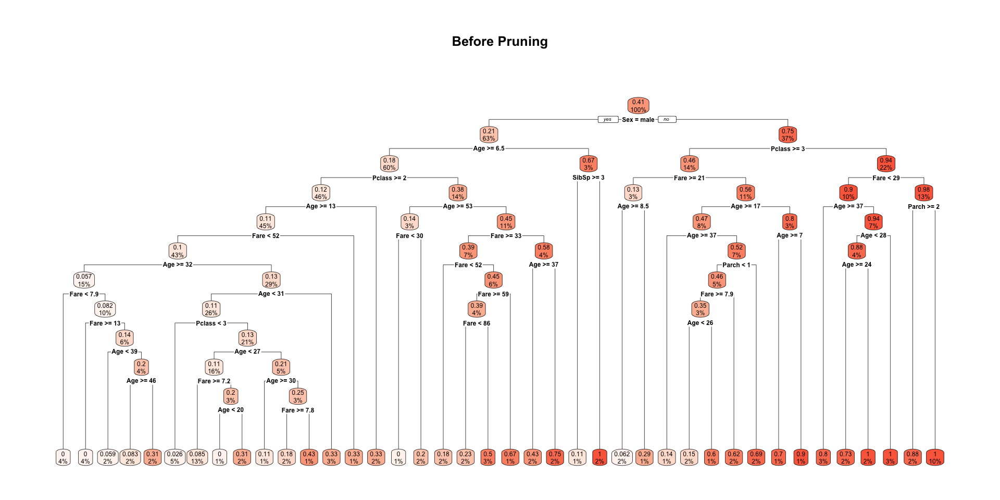
✂️ After Pruning
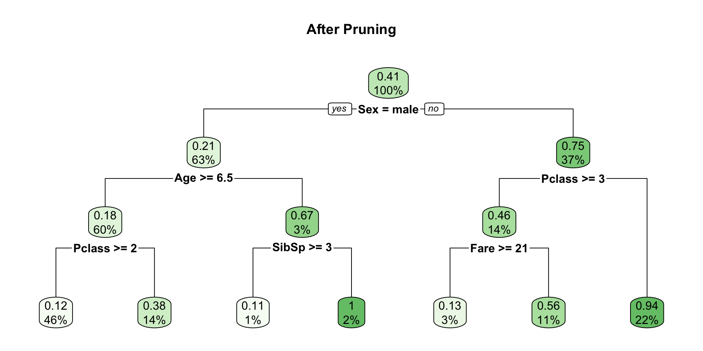
Result: Simpler tree with better generalization! 🎯
🎮 Fun Example: Game Character Selection
Let’s build something fun!
# Create game character data
set.seed(456)
game_chars <- data.frame(
strength = sample(1:100, 50, replace = TRUE),
magic = sample(1:100, 50, replace = TRUE),
speed = sample(1:100, 50, replace = TRUE),
class = sample(c("Warrior", "Mage", "Rogue", "Paladin"),
50, replace = TRUE)
)
# Build classifier
game_model <- rpart(class ~ strength + magic + speed,
data = game_chars, method = "class")🎮 Game Character Tree
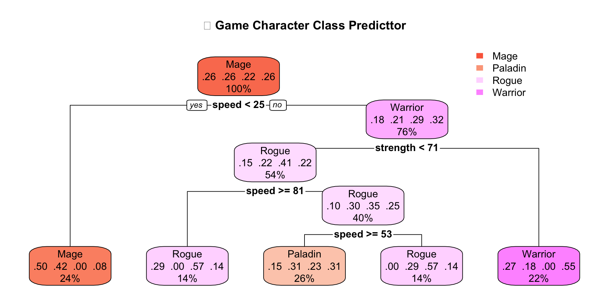
🔬 Understanding Split Quality
How does the algorithm choose splits?
Gini Index:
- Formula: \(Gini = 1 - \sum_{i=1}^{n} p_i^2\)
- Perfect split: Gini = 0 (all same class)
- Worst split: Gini = 0.5 (50/50 mix)
- Goal: Minimize Gini after split
Information Gain:
- Formula: \(IG = Entropy(parent) - \sum \frac{|child|}{|parent|} \times Entropy(child)\)
- Entropy: \(H = -\sum_{i=1}^{n} p_i \log_2(p_i)\)
- Pure node: Entropy = 0
- Goal: Maximize information gain
Gini vs Information Gain 🤔
Both methods usually produce similar trees! Gini is slightly faster to compute, while Information Gain has a theoretical foundation in information theory. rpart uses Gini by default.
🔬 Comparing Split Methods
🔬 Gini Index Split
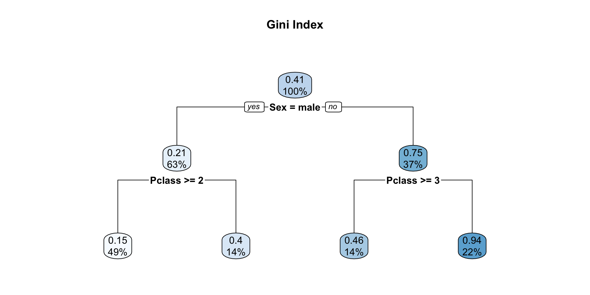
🔬 Information Gain Split
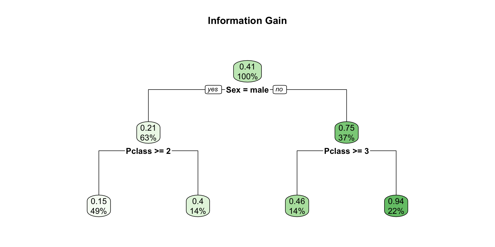
🎯 Best Practices & Tips
Key recommendations for building decision trees:
- ✅ Start simple - Use default parameters first
- ✅ Check class balance - Adjust priors if needed
- ✅ Cross-validate - Don’t trust training accuracy alone
- ✅ Prune wisely - Simpler trees generalize better
- ✅ Interpret carefully - Correlation ≠ Causation
- ✅ Feature engineering - Good features = better trees
- ✅ Ensemble methods - Consider Random Forests
- ✅ Visualize always - Trees are meant to be seen!
Common Pitfall: 🚨 Don’t overfit! A tree that’s 100% accurate on training data is probably memorizing!
The Golden Rule ⚖️
If your training accuracy is much higher than test accuracy, you’re overfitting! Increase cp, minsplit, or try pruning.
🧪 Live Coding Challenge!
Let’s build a tree together in real-time! 🚀
# YOUR TURN: Complete this code
# Predict whether a passenger is in 1st class based on fare and age
# Step 1: Create the target variable
titanic_data$FirstClass <- ifelse(titanic_data$Pclass == 1, "Yes", "No")
# Step 2: Build your model (fill in the blanks!)
class_model <- rpart(
FirstClass ~ _____ + _____, # Add predictors
data = titanic_data,
method = "_____" # classification or regression?
)
# Step 3: Visualize
rpart.plot(class_model,
main = "Your Tree Title Here!",
box.palette = "_____") # Choose a color!
# Step 4: Make a prediction
new_passenger <- data.frame(Fare = 50, Age = 30)
predict(class_model, new_passenger, type = "_____")Important
Challenge: Can you get accuracy above 85%? 🎯
🎮 Interactive Quiz: Test Your Knowledge!
What does a decision tree use to decide splits?
- Random selection
- Alphabetical order
- Gini Index or Information Gain ✅
- User preference
What does “pruning” do?
- Makes the tree grow faster
- Removes branches to prevent overfitting ✅
- Adds more features
- Changes the root node
Which is NOT a good use case for decision trees?
- Medical diagnosis
- Credit approval
- Complex mathematical optimization ✅
- Species classification
What does cp parameter control?
- Tree color
- Computation speed
- Complexity/pruning ✅
- Number of leaves
💡 Common Mistakes to Avoid
Learn from these pitfalls:
- ❌ Not pruning overgrown trees
- ✅ Use
cpparameter orprune()function
- ✅ Use
- ❌ Ignoring class imbalance
- ✅ Adjust priors:
parms = list(prior = c(0.7, 0.3))
- ✅ Adjust priors:
- ❌ Testing on training data
- ✅ Always use separate test set or cross-validation
- ❌ Forgetting to handle missing data
- ✅ Use
na.action = na.omitor impute values
- ✅ Use
- ❌ Using too many features without checking
- ✅ Check
variable.importancefirst
- ✅ Check
Prevention is Better Than Debugging! 🐛
These mistakes can waste hours of debugging time. Learn them now and save yourself future frustration!
🎨 Customization Gallery
Different ways to style your trees:
Make It Your Own! 🎨
The next few slides show different color schemes and styles. Choose what works best for your audience and presentation context!
🎨 Classic Gray Style
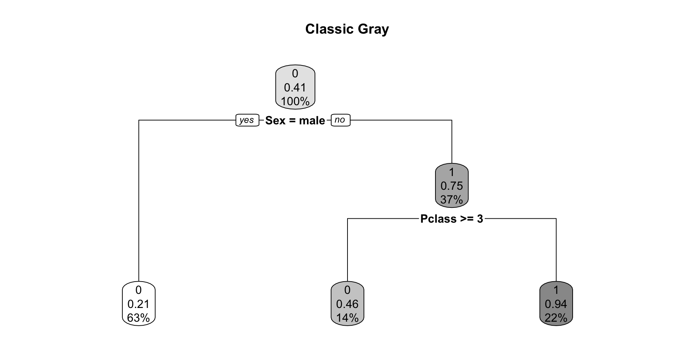
🎨 Traffic Light Style
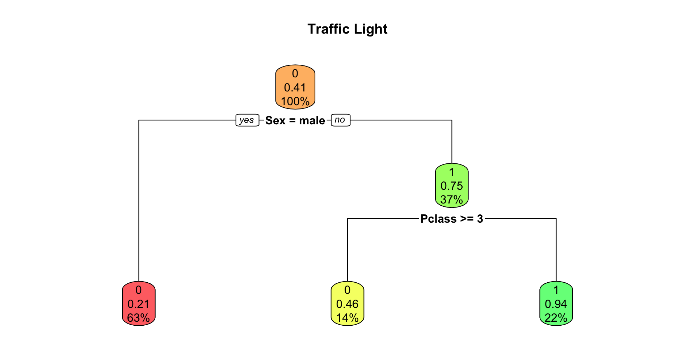
🎨 Minimal Blue Style
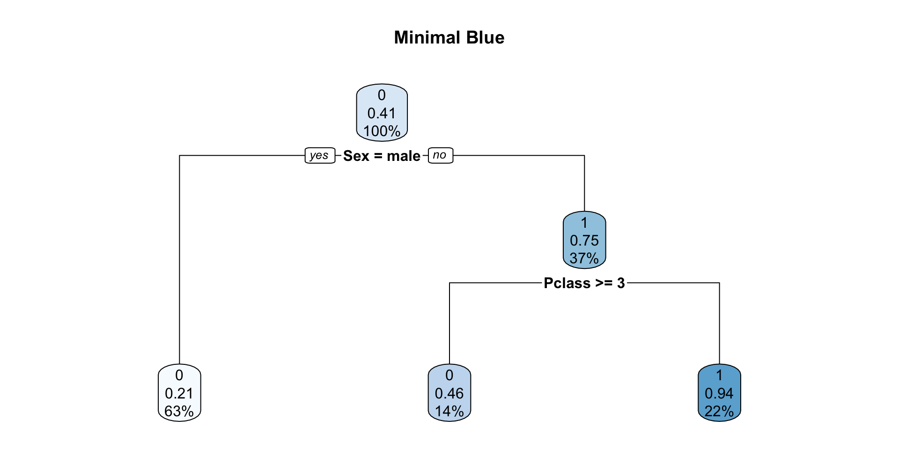
🎨 Detailed Orange Style
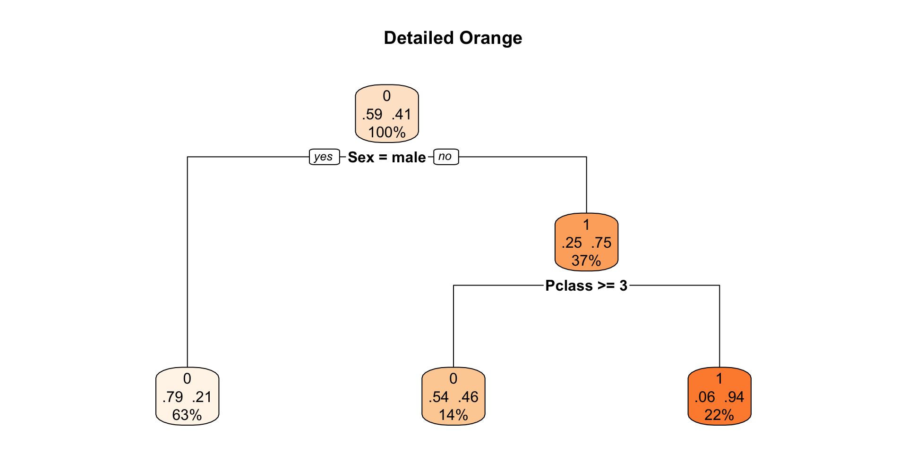
🔍 Debugging Your Trees
Tree not working as expected? Check these:
Diagnostic Toolkit 🔧
We’ll explore several diagnostic tools on the next slides to help you understand and troubleshoot your decision trees.
🔍 Model Structure
n= 714
node), split, n, deviance, yval
* denotes terminal node
1) root 714 172.2129000 0.4061625
2) Sex=male 453 73.9072800 0.2052980
4) Age>=6.5 429 63.1794900 0.1794872
8) Pclass>=1.5 330 34.3909100 0.1181818 *
9) Pclass< 1.5 99 23.4141400 0.3838384
18) Age>=53 22 2.5909090 0.1363636 *
19) Age< 53 77 19.0909100 0.4545455 *
5) Age< 6.5 24 5.3333330 0.6666667
10) SibSp>=2.5 9 0.8888889 0.1111111 *
11) SibSp< 2.5 15 0.0000000 1.0000000 *
3) Sex=female 261 48.3065100 0.7547893
6) Pclass>=2.5 102 25.3431400 0.4607843
12) Fare>=20.8 23 2.6086960 0.1304348 *
13) Fare< 20.8 79 19.4936700 0.5569620 *
7) Pclass< 2.5 159 8.4905660 0.9433962 *🔍 More Debugging Tools
🔍 CP Table Analysis
Regression tree:
rpart(formula = Survived ~ ., data = titanic_data)
Variables actually used in tree construction:
[1] Age Fare Pclass Sex SibSp
Root node error: 172.21/714 = 0.24119
n= 714
CP nsplit rel error xerror xstd
1 0.290333 0 1.00000 1.00308 0.014375
2 0.084040 1 0.70967 0.71252 0.036093
3 0.031324 2 0.62563 0.63038 0.034589
4 0.031208 3 0.59430 0.61596 0.036063
5 0.025808 4 0.56309 0.58188 0.034830
6 0.018818 5 0.53729 0.56775 0.034777
7 0.010059 6 0.51847 0.56373 0.035456
8 0.010000 7 0.50841 0.56414 0.036219🔍 Visualize Cross-Validation Error
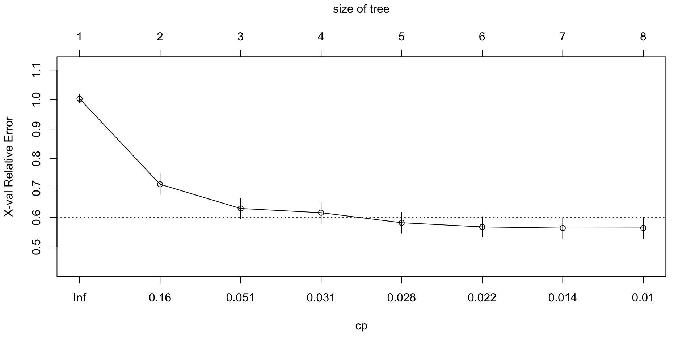
Debugging Tip: 🔧 If your tree is just one node, try lowering cp or minsplit!
Reading the CP Plot 📉
Look for the horizontal dashed line (min + 1 SE). Choose the simplest tree (leftmost point) below this line for best generalization!
Now Go Forth and Build Intelligent Trees! 🌳✨

🎁 Bonus: Complete Example Code
Copy-paste ready code for your projects!
# ============================================
# COMPLETE DECISION TREE WORKFLOW
# ============================================
# 1. Load libraries
library(rpart)
library(rpart.plot)
library(tidyverse)
# 2. Load and prepare data
data(titanic_train, package = "titanic")
df <- titanic_train %>% select(Survived, Pclass, Sex, Age, Fare) %>% na.omit()
# 3. Split train/test
set.seed(42)
train_idx <- sample(1:nrow(df), 0.7 * nrow(df))
train <- df[train_idx, ]
test <- df[-train_idx, ]
# 4. Build model
model <- rpart(Survived ~ ., data = train, method = "class",
control = rpart.control(cp = 0.01))
# 5. Visualize
rpart.plot(model, main = "Titanic Survival Tree", box.palette = "RdYlGn")
# 6. Evaluate
pred <- predict(model, test, type = "class")
accuracy <- mean(pred == test$Survived)
cat("Test Accuracy:", round(accuracy * 100, 2), "%\n")
# 7. Prune if needed
pruned <- prune(model, cp = 0.02)
rpart.plot(pruned, main = "Pruned Tree")